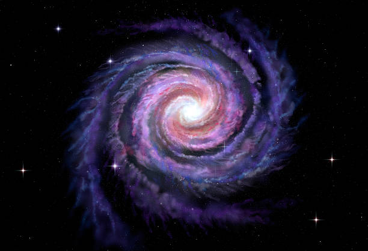
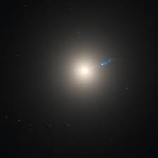
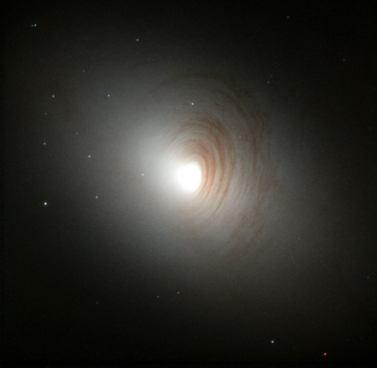

01.1 — Tipos de galaxias
Más allá de la espiral

🌀 Espirales
Como nuestra Vía Láctea. Tienen un núcleo central brillante y brazos curvos envueltos en polvo y gas donde nacen estrellas.

⚪ Elípticas
Forma ovalada, sin brazos definidos. Contienen estrellas viejaS y poco gas. Van desde formas casi esféricas hasta alargadas.

🔮 Irregulares
Sin forma definida. Suelen ser el resultado de perturbaciones gravitacionales o colisiones con otras galaxias.

🔄 Lenticulares
Una mezcla entre espirales y elípticas: tienen disco pero sin brazos espirales evidentes.
* Se estima que en el universo observable hay entre 200 mil millones y 2 billones de galaxias.


Debate Cósmico
Los comentarios están disponibles en la versión online del sitio. Visita rimuru2321.github.io/COSMOS para participar en el debate cósmico.
🚀 Ir al sitio online